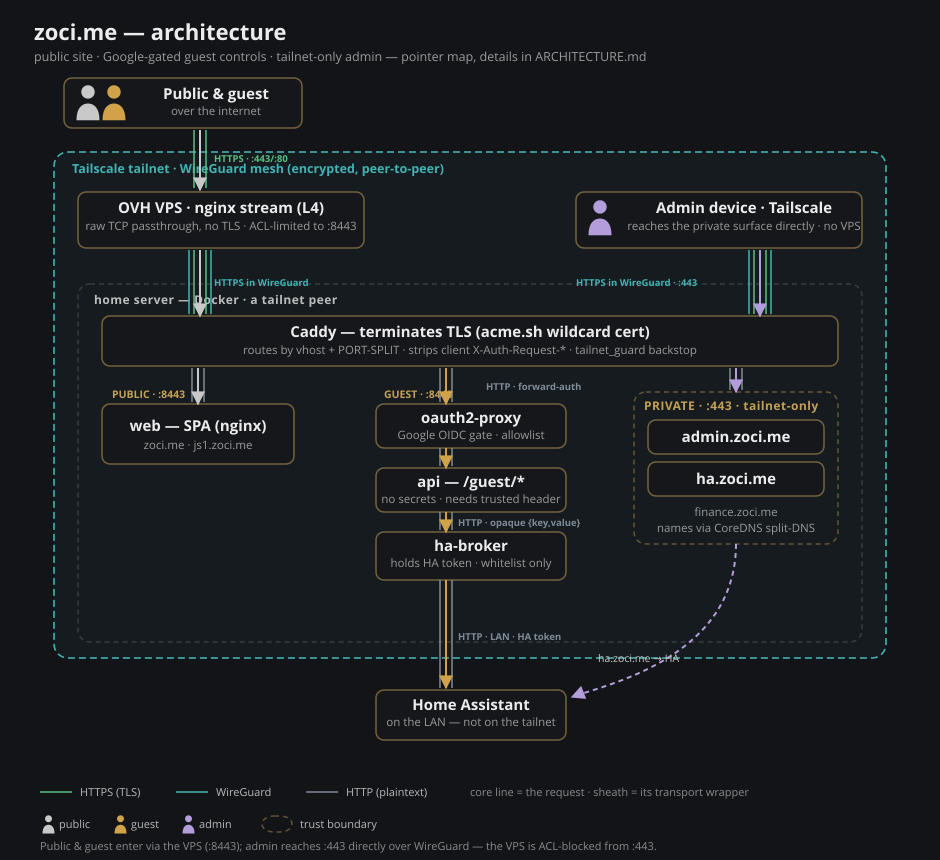
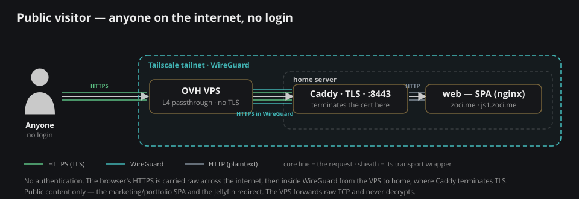
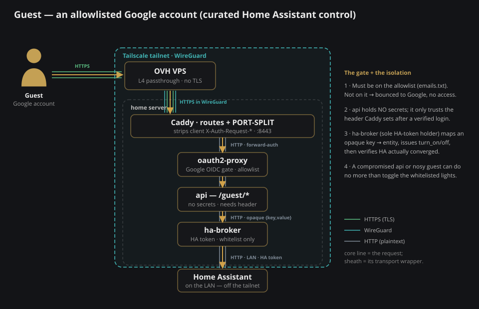
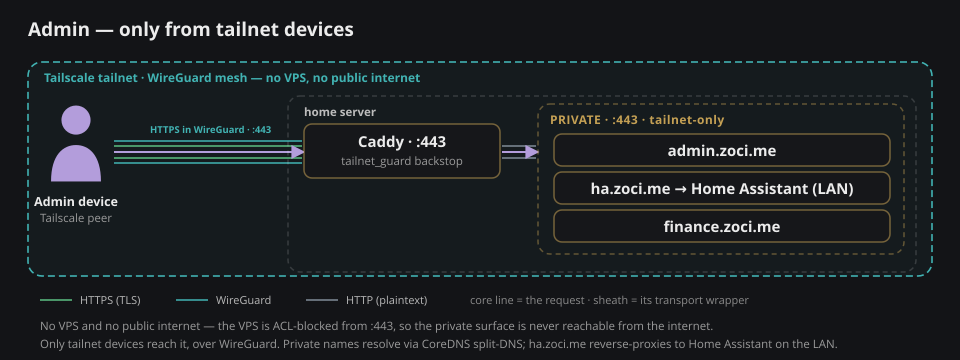

zoci.me — diagrams
Local preview (make preview). Sources in docs/*.svg; embedded in ARCHITECTURE.md (GitHub renders them).
System overview

Path — Public visitor

Path — Guest (allowlisted Google account)

Path — Admin (you, on Tailscale)
